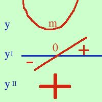
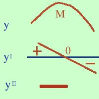
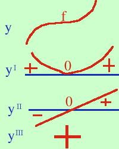

| e, naturalmente, se la derivata e' negativa la funzione e' decrescente e viceversa. Cioe' funzione crescente e derivata positiva sono due cose equivalenti (in matematica questo viene espresso con la notazione se e solo se ) come anche sono equivalenti derivata negativa e funzione decrescente ( meglio dire: la derivata e' negativa se e solo se la funzione e' decrescente) Dimostriamo  che se la derivata prima e' nulla e la derivata seconda e' positiva in un punto allora quel punto e' di minimo per la funzione: La figura va letta dal basso verso l'alto: se la derivata seconda e' positiva ne segue che la derivata prima e' crescente, ma essendo zero in un punto prima del punto sara' negativa e dopo il punto sara' positiva; allora la funzione sara' prima decrescente e poi crescente, quindi ho un minimo questa dimostrazione mi e' stata chiesta all'orale dell'esame di maturita' nel lontano 1966. Tra noi studenti circolava la voce che l'esaminatore fosse l'autore di questo teorema Dimostriamo  che se la derivata prima e' nulla e la derivata seconda e' negativa in un punto allora quel punto e' di massimo per la funzione: La figura va letta dal basso verso l'alto: se la derivata seconda e' negativa ne segue che la derivata prima e' decrescente, ma essendo zero in un punto prima del punto sara' positiva e dopo il punto sara' negativa; allora la funzione sara' prima crescente e poi decrescente, quindi ho un massimo. Per finire dimostriamo  che se la derivata prima e' nulla come la derivata seconda e la derivata terza e' positiva in un punto allora quel punto e' di flesso orizzontale crescente per la funzione: La figura va letta dal basso verso l'alto: se la derivata terza e' positiva ne segue che la derivata seconda e' crescente, ma, essendo zero in un punto, prima del punto sara' negativa e dopo il punto sara' positiva; allora la derivata prima essendo nulla nello stesso punto sara' prima decrescente e poi crescente, quindi sara' al di sopra dell'asse x e tutta positiva allora la funzione sara' prima crescente (tendendo all'orizzontale) e poi ancora crescente (partendo dall'orizzontale cioe' avro' un flesso ascendente Come esercizio potresti dimostreare che se la derivata prima e seconda sono nulle e la derivata terza e' negativa si ha un flesso orizzontale discendente. Se riesci a farlo agevolmente significa che hai capito bene il metodo |